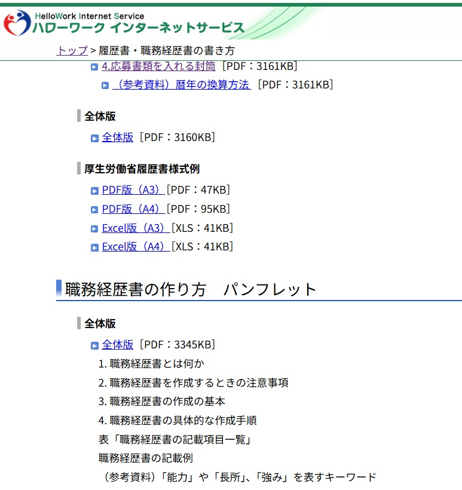
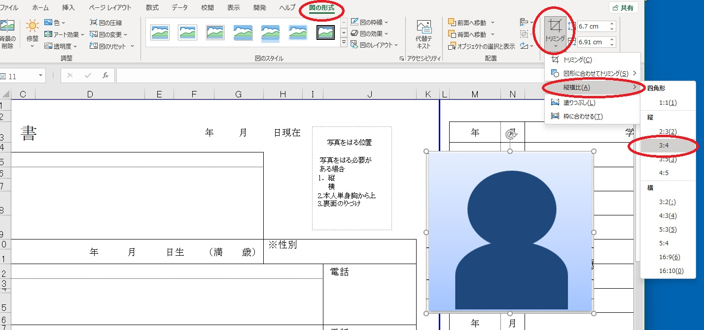

履歴書をパソコンで作る全手順
テンプレートの入手から、写真の貼り付け、PDFで送るところまで
「履歴書は、手書きじゃないと失礼なんでしょうか」
教室で、ときどき聞かれる質問です。
就職活動が久しぶりだと、まずここで止まってしまいます。
パソコンで作っていいのか。
印刷した履歴書は大丈夫なのか。
テンプレートはどこで手に入れるのか。
この記事では、その不安を最初に片づけてから、テンプレートの入手、入力、写真の貼り付け、PDF化、送るところまでを、順番に通して解説します。
使うのは、公式に配られている様式と、WordやExcelの基本操作だけです。
手書きの指定がなければ、パソコンで作って問題ありません。
いまは、パソコンで作った履歴書を受け付ける会社がほとんどです。
印刷した履歴書も、それだけで不利になることはありません。
応募先から「手書きで」「この様式で」と指定がある場合だけ、その指定に従ってください。
全体の流れは5つだけ
やることを先に並べておきます。
この順番で進めれば、途中で迷いません。
| 順番 | やること |
|---|---|
| 1 | テンプレート（様式）を入手する |
| 2 | 氏名・学歴・職歴などを入力する |
| 3 | 証明写真のデータを貼る |
| 4 | PDFにして、ファイル名を付ける |
| 5 | 送る、または印刷する |
紙で提出する場合は、4のあとに 印刷の確認 が入ります。
テンプレートは、公式の様式を取る
履歴書の様式は、厚生労働省が出している様式例を使うのが確実です。
以前は「JIS規格の履歴書」が定番でしたが、その様式例は2020年に削除され、2021年4月に厚生労働省が新しい様式例を作りました。
性別は任意で書く欄になり、通勤時間や扶養家族の欄がない、今の採用の考え方に合った様式です。
この様式例は、ハローワークのサイト（ハローワークインターネットサービス）から、無料でダウンロードできます。
会員登録は要りません。
- パソコンで入力するなら「Excel版」（ファイルの形式は古い.xlsです。そのまま入力して使う分には、問題ありません）
- 印刷して手書きするなら「PDF版」
- 大きさは、家庭のプリンターならA4（2枚）、コンビニで印刷するならA3（1枚・二つ折り）も選べます
入手先と書き方の公式案内は、ハローワークの 「履歴書・職務経歴書の書き方」 のページにまとまっています。
様式例のダウンロードも、このページからたどれます。

▲ 公式の様式例をダウンロードして使用しましょう
ダウンロードできないときは、次の順番で試してください。
1. ページを開き直すか、別のブラウザで開いてみます。
2. ダウンロードのリンクを右クリックして、「名前を付けてリンク先を保存」を選びます。
3. それでも取れない場合は、近くのハローワークで様式をもらうこともできます。
求人サイトや民間のサイトにも無料テンプレートはたくさんありますが、出どころがはっきりしないものは避けてください。
様式が古いままだったり、ダウンロードの途中で会員登録や広告に誘導されたりすることがあります。
公式の様式を基準にしておくのが確実です。
入力の前に、3つだけ決めておく
日付は「提出する日」を書く
履歴書の右上の日付は、作った日ではなく、提出する日です。
作り置きした書類を日付そのままで出すと、古い日付の書類になってしまうからです。
郵送なら投函する日、持参なら持っていく日、メールなら送る日を書きます。
「○年○月○日現在」の様式では、その日付を入れます。
西暦と和暦は、そろえる
学歴・職歴の年月は、西暦（2021年）でも和暦（令和3年）でも、どちらかに統一すれば大丈夫です。
混ざっていると、読み手が計算し直すことになるので、そろえておきましょう。
生年月日は、様式の表記に合わせます。
様式の枠と文字は、勝手に変えない
ExcelやWordの様式は、欄の大きさと文字の大きさが決まっています。
入りきらないからと行を増やしたり、枠を広げたりすると、印刷したときに次のページへはみ出します。
入りきらない内容は、書き方を短くするか、職務経歴書のほうへ移すのが先です。
学歴の書き方
学歴は、中学校の卒業から書くのが一般的です。
読み手が、学歴の流れを最初から追えるようにするためです。
- 平成○年3月 ○○市立○○中学校 卒業
- 平成○年4月 ○○県立○○高等学校 入学
- 平成○年3月 ○○県立○○高等学校 卒業
学校名は省略せず、正式な名前で書きます。
「高校」ではなく「高等学校」です。
略称は、読み手に正確に伝わらないことがあるからです。
卒業した年月を覚えていないときは、卒業アルバムや卒業証書で確かめるのが確実です。
それでも分からない場合は、学校に問い合わせると教えてもらえます。
「だいたいこの年だったはず」で書くのは避けてください。
面接で聞かれたときに、話が食い違ってしまいます。
中退した場合は、入学と卒業の間に「中途退学」と書きます。
隠して卒業と書くのは、経歴の詐称になってしまいます。
正直に書いたほうが、面接でも説明しやすくなります。
職歴の書き方
職歴は、会社ごとに「入社」と「退社」を1行ずつ書きます。
- 平成○年4月 株式会社○○ 入社
- 令和○年3月 一身上の都合により退社
- 令和○年4月 株式会社○○ 入社
- 現在に至る
- 以上
会社名は正式名称で、「（株）」のように省略しません。
株式会社は、名前の前にあるか後ろにあるかも、その会社の正しい表記どおりに書きます。
パート・アルバイトも書いていい
正社員の経験だけが職歴ではありません。
長く続けたパートやアルバイトも、働いた実績として書けます。
短期間のものを全部並べる必要はありませんが、空白の期間が長くなるくらいなら、書いておいたほうが伝わります。
派遣で働いたときは
派遣の場合は、雇われているのは派遣会社（派遣元）です。
会社名は派遣元を書き、仕事内容の欄や職務経歴書で、実際に働いた場所（派遣先）での仕事を書くと伝わりやすくなります。
転職が多くて欄が足りないときは
履歴書の職歴欄は、会社名と入退社の年月を並べる場所です。
仕事の中身を詳しく書く場所は、職務経歴書のほうにあります。
欄が足りないときは、履歴書は年月と会社名だけに絞り、中身は職務経歴書へ回してください。
職務経歴書の書き方は、職務経歴書の作成ポイントで、経験を仕事の言葉に言い換える例つきで解説しています。
志望動機と、本人希望の欄
厚生労働省の様式には、「志望の動機、特技、好きな学科、アピールポイント」の欄があります。
履歴書のこの欄は、長く書く場所ではありません。
要点だけを書き、詳しい中身は職務経歴書と面接で伝えるのが役割分担です。
志望動機は、3つの順番で書く
1. なぜこの会社（この仕事）なのか。
2. 自分の経験の、どこが合っているか。
3. 入ってから、どんな仕事をしたいか。
この3つが1〜2行ずつ入っていれば、履歴書としては十分です。
「貴社の将来性に魅力を感じました」のような、どの会社にも使える一文だけだと、読み手には何も残りません。
応募先の求人票やホームページで見た、具体的な仕事の名前を1つ入れるだけで、伝わり方が変わります。
本人希望記入欄は、基本は1行でいい
特に希望がない場合は「貴社の規定に従います」と書くのが基本です。
勤務時間や勤務地に事情があるときだけ、具体的に書きます。
給与の希望は、求められていない限り、この欄には書かないでください。
条件の話は、採用の流れの中で確認するものです。
先に金額だけが表に出ると、仕事の中身より条件で選んでいる印象になってしまいます。
証明写真は、データで貼る
写真欄の大きさは、縦4cm×横3cm（縦と横の比は3:4）です。
証明写真のデータがあれば、印刷した写真をのりで貼る代わりに、文書の中へ直接入れられます。
貼り方の手順（Wordの場合）
1. [挿入]をクリックします。
2. [画像]から[このデバイス]を選びます。
3. 証明写真のデータを選んで、[挿入]をクリックします。
4. 入った画像を選んだまま、[図の形式]タブを開きます。
5. [トリミング]の下向きの矢印をクリックして、[縦横比]から[3:4]を選びます。
6. 画像をドラッグして、顔の位置を枠に合わせます。
もう一度[トリミング]をクリックすると、切り取りが決まります。
7. [サイズ]で高さ4cm・幅3cmに直して、写真欄の枠に合わせます。
位置がうまく動かないときは、画像を選んだ状態で[文字列の折り返し]を[前面]に変えると、自由に動かせるようになります。
貼り方の手順（Excelの場合）
1. [挿入]をクリックします。
2. [画像]から、セルの上に配置する形を選びます（メニューの名前は、バージョンで少し変わります）。
3. 証明写真のデータを選んで、[挿入]をクリックします。
4. 入った画像を選んだまま、[図の形式]タブを開きます。
5. [トリミング]の下向きの矢印をクリックして、[縦横比]から[3:4]を選びます。
6. 画像をドラッグして、顔の位置を枠に合わせます。
もう一度[トリミング]をクリックすると、切り取りが決まります。
7. [サイズ]で高さ4cm・幅3cmに合わせて、写真欄の枠へドラッグします。

▲ 写真データはトリミング機能を使って3:4に整えてから配置しましょう
先に縦横比を3:4にしておくのには、理由があります。
入れたばかりの写真は、縦と横の比が、元の写真のままになっています。
その状態で高さと幅を直接変えようとすると、比が固定されているので、片方を変えても、もう片方がついてきてしまい、写真欄の形に合わせるのが難しくなります。
先にトリミングで写真欄と同じ3:4の形にしておけば、あとは大きさを変えるだけで、枠にすっきり収まります。
PDFにしたら写真がぼやける、と言われるときは
原因はだいたい、元の写真が小さいことです。
小さい画像を枠いっぱいに引き伸ばすと、ぼやけて見えます。
スマホで撮った写真や証明写真アプリのデータは、元の大きさのまま使うのが基本です。
逆に、大きすぎる写真は、ファイル全体が重くなって送れないことがあります。
その場合は、写真だけを少し小さくしてから貼り直してください。
スマホの写真を使うときは、形式にも注意してください。
iPhoneの写真はHEICという形式のことがあり、パソコンによっては開けません。
送る・貼る前にJPEGへ変えておく方法は、JPEGとPNGの使い分けの記事で解説しています。
PDFにして、ファイル名を付ける
入力が終わったら、提出用にPDFへ変換します。
PDFにする理由は、相手のパソコンで開いても、行がずれたり文字が化けたりしないからです。
WordやExcelのファイルのまま送ると、相手の環境で見た目が変わってしまうことがあります。
PDFの作り方（Wordの場合）
1. [ファイル]をクリックします。
2. [エクスポート]を選びます。
3. [PDF/XPS ドキュメントの作成]をクリックします。
4. [PDF/XPS の作成]をクリックします。
5. 保存する場所とファイル名を決めて、[発行]をクリックします。
[名前を付けて保存]から、ファイルの種類をPDFにして保存しても、同じものが作れます。
PDFの作り方（Excelの場合）
1. [ファイル]をクリックします。
2. [エクスポート]を選びます。
3. [PDF/XPS ドキュメントの作成]をクリックします。
4. [PDF/XPS の作成]をクリックします。
5. 保存する場所とファイル名を決めて、[発行]をクリックします。
Excelでは、ブックにあるシートがまとめてPDFになることがあります。
[発行]の画面で[オプション]を開いて、発行の対象が履歴書のシートだけになっているか、先に確認してください。
ファイル名は、開かなくても分かる名前に
- 履歴書_氏名_20261123.pdf
「履歴書（最新）」「履歴書2」のような名前は避けます。
受け取る側は、何人もの書類を扱っています。
誰の・何の書類か、名前だけで分かることが、そのまま丁寧さになります。
変換したら、必ず開いて確認する
作ったPDFは、送る前に一度開いてください。
写真がぼやけていないか、2枚に分かれていないか、文字が枠からはみ出していないか。
この確認を1回入れるだけで、出し直しのほとんどは防げます。
印刷するときの確認
紙で提出する場合は、そのまま印刷せず、先にプレビューで確認します。
画面の見た目と紙の出来上がりが一番ずれやすいのが、印刷だからです。
印刷の確認（Excelの場合）
1. [ファイル]をクリックします。
2. [印刷]を選びます。
3. 右側のプレビューで、履歴書がA4で2枚に収まっているかを見ます。
4. 3枚目にはみ出していないか、端の文字が切れていないかも見ます。
5. 左側の設定で、用紙がA4になっているかを確認します。
6. 問題がなければ、[印刷]をクリックします。
はみ出すときは、セルの幅や余白が原因のことがほとんどです。
先に幅と余白を見直してください。
ここで「シートを1ページに印刷」のような縮小の設定を使わないでください。
理由は3つあります。
1つ目は、文字が小さくなりすぎることです。
A4で2枚分の内容を1枚に押し込むので、採用担当が読む書類としては、読みにくくなってしまいます。
2つ目は、写真の大きさが決まりからずれることです。
写真欄は縦4cm×横3cmと決まっています。
縮小すると写真まで小さく印刷されて、様式どおりの大きさでなくなります。
3つ目は、はみ出しの原因が直らないことです。
3枚目にはみ出すのは、行が増えた・列が広がったという、様式が崩れているサインです。
縮小で押し込むと、その崩れを直さないまま提出することになります。
1枚に収めたいときは、A4の様式を縮小するのではなく、厚生労働省のA3版（二つ折りで1枚）の様式を使ってください。
それが正しいやり方です。
印刷の確認（Wordの場合）
1. [ファイル]をクリックします。
2. [印刷]を選びます。
3. 右側のプレビューで、2ページに収まっているかを見ます。
4. 写真の位置がずれていないか、端が切れていないかも見ます。
5. 左側の設定で、用紙がA4になっているかを確認します。
6. 問題がなければ、[印刷]をクリックします。
PDFを印刷するときは
PDFを開いて印刷する場合は、倍率を「実際のサイズ（100%）」にしてください。
「用紙に合わせて縮小」が選ばれていると、全体が小さく印刷されて、写真の大きさも変わってしまいます。
家にプリンターがない場合は、コンビニのマルチコピー機で、USBメモリやスマホに入れたPDFを印刷できます。
コンビニでは紙は選ばれません。
印刷したら、そのまま手に持って帰らず、クリアファイルや封筒に入れてください。
折れたり汚れたりするのを防げます。
自宅で印刷する場合は、少し厚みのある上質紙を使うと、持っていくときに折れ曲がりにくくなります。
普通のコピー用紙でも、もちろん提出できます。
送るとき（メール）と、送付状の判断
メールで送る場合は、件名と本文で、誰の・何の書類かが伝わるようにします。
- 件名：応募書類の送付について（氏名）
- 本文：○○株式会社 採用ご担当者様
お世話になっております。○○（氏名）と申します。
求人への応募書類（履歴書・職務経歴書）を添付いたします。ご確認のほど、よろしくお願いいたします。
添付したファイルにパスワードをかけるかどうかは、応募先の指示に従います。
指示がないのに勝手にかけると、開けずに止まってしまうことがあります。
パスワードをかけた場合は、パスワードだけを別のメールで送ります。
書類とパスワードを同じメールに入れると、万一メールが他人に見られたとき、両方いっしょに漏れてしまうからです。
送付状は、送り方で決める
送付状（添え状）は、郵送するときに添えるものです。
持参するときは要りません。
メールで送るときは、メール本文が送付状の代わりになるので、別に作る必要はありません。
郵送する場合は、送付状に、宛先・日付・自分の連絡先と「履歴書1通、職務経歴書1通」のように中身の内訳を書きます。
凝った文章は要りません。
教室では、Wordの様式を配っています
授業時間内に、履歴書を作成したりします。
ここでよくあることを書いておきます。
履歴書を作るときに、私のクラスでは、Wordの様式の履歴書を配布します。
理由は、ハローワークの規定のものだと、通常Excelのものになるのですが、Excelのファイル形式がxls形式という古いタイプのものなので、各自が自宅のパソコン等で編集しようとすると、いろいろボタン押さないとできないとか、Excel以外のもので編集して保存しようとするとレイアウトが崩れてしまう可能性があるからです。
現在、世の中でのExcelのファイル形式は、xlsからxlsxに変わっています。
でも、ハローワークでは、今もこの古いタイプのものなので、現在の仕様に合ったタイプのExcelのファイルをこちらで調整しなおしたものを提供もしているのですが、履歴書作成を始めるときって、実は、「パソコンの学習を始めたばかり」のときが多いんです。
これ、パソコン初心者にとっては、もしかすると文字入力すらうまくできないという状態の方もいるのです。
そういう方に、Excelのファイルを渡して、Excelで入力してくださいねーてさすがに辛いんじゃないかなと。
また、学習の順番もあります。
Word → Excel の学習の流れなんです。
なので、Wordで表の修正ができたり、余白の修正やページの区切り等を学んだあとであれば、もし、自分の履歴書がレイアウト崩れ起こしても、修正ができる土台がある状態になります。
なので、私のクラスでは、Wordの履歴書を配布するようにしています。
もちろん、ハローワーク推奨のExcelファイルで入力できるところに入力していくでもきちんと作成できますので、そこは安心してください。
よくある質問
パソコンで作った履歴書は、失礼になりませんか
手書きの指定がない限り、失礼にはなりません。今はパソコン作成の履歴書を受け付ける会社がほとんどで、読みやすさの面でも好まれます。応募先の指定がある場合だけ、それに従ってください。
学歴は高校から書いてもいいですか
中学校の卒業から書くのが一般的です。読み手が学歴の流れを最初から追えるからです。様式の行が足りない場合は、高校の入学からにすることもありますが、その場合も卒業までの流れが分かるように書いてください。
写真はスマホで撮ったものでもいいですか
背景が白っぽく、正面を向いて、胸から上が写っているものなら使えます。ただし、自撮りの雰囲気が強い写真は印象が下がります。証明写真機や写真店のデータ渡し、証明写真アプリを使うと確実です。大きさは縦4cm×横3cmに合わせてください。
メールで送るときも、送付状は必要ですか
必要ありません。メール本文が送付状の代わりになります。送付状を添えるのは、郵送するときだけです。
まとめ
- 手書きの指定がなければ、履歴書はパソコンで作って問題ない
- テンプレートは、厚生労働省の様式例をハローワークのサイトから取るのが確実
- 学歴は中学校の卒業から、職歴は正式名称で。入りきらない中身は職務経歴書へ
- 写真は縦4cm×横3cmのデータを貼り、PDFにしたら必ず開いて確認する
- ファイル名は「履歴書_氏名_日付」。送付状は郵送のときだけ
履歴書づくりで止まる場所は、だいたい決まっています。
この記事の順番どおりに進めれば、一人でも最後まで作りきれます。
この記事について
この記事は、パソコンスクールのインストラクターとして、就職を目指す方を指導する中で、受講生が履歴書づくりで止まりやすい場所をもとに作成しました。
参考にした情報と確認日（2026年11月23日）：厚生労働省「履歴書の様式例」、ハローワークインターネットサービス「履歴書・職務経歴書の書き方」。
応募先から様式や提出方法の指定がある場合は、その指定が正しくなります。
メニューや設定の名称は、ソフトのバージョンで変わる場合があります。
運営者情報は運営者情報のページをご覧ください。